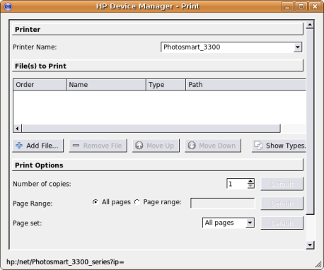

To print using HPLIP you can click the "Actions" Tab in hp-toolbox
or run hp-print. Then the hp-print utility will run and will
appear as shown below:

From
the Device Manager - Print Screen, you can see the file types that are
supported as well as selecting which files to print, number of copies
and so forth.